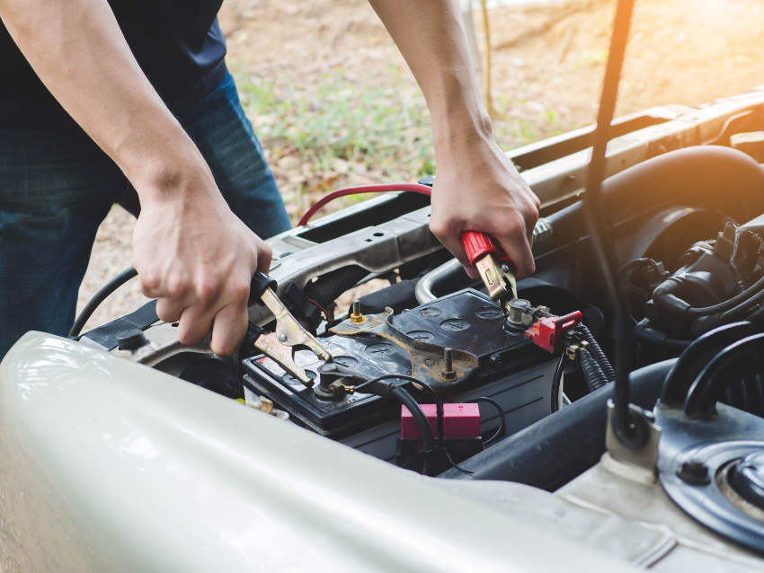

Aracınızın aküsü mü bitti? Takviye kablosu kullanarak başka bir araçtan akü takviyesi yapabilirsiniz. Bu rehberde adım adım nasıl yapacağınızı anlattık.

Gerekli Malzemeler
- Akü takviye kablosu (kırmızı ve siyah uçlu)
- Çalışan bir başka araç
- Koruyucu eldiven (önerilir)
Adım 1: Araçları Konumlandırın
Çalışan aracı, aküsü biten aracın yanına getirin. Akülerin birbirine yakın olmasına dikkat edin ama araçlar birbirine değmesin. Her iki aracın da motorunu kapatın, vitesi boşa alın ve el frenini çekin.
Adım 2: Tüm Elektrikli Cihazları Kapatın
Her iki araçta da farları, radyoyu, klima ve diğer tüm elektrikli aksesuarları kapatın. Bu, takviye sırasında akü üzerindeki yükü azaltır ve güvenliği artırır.
Adım 3: Kabloları Doğru Sırayla Bağlayın
Bu adım çok önemlidir. Kabloları yanlış bağlamak akü patlamasına neden olabilir. Sırasıyla:
- Kırmızı (+) kabloyu biten akünün pozitif (+) kutbuna bağlayın
- Kırmızı kablonun diğer ucunu çalışan aracın pozitif (+) kutbuna bağlayın
- Siyah (-) kabloyu çalışan aracın negatif (-) kutbuna bağlayın
- Siyah kablonun diğer ucunu biten araçtaki motor bloğundaki metal bir yüzeye (toprak noktasına) bağlayın — doğrudan negatif kutba değil

Adım 4: Çalışan Aracı Çalıştırın
Çalışan aracın motorunu çalıştırın. Gazı hafifçe vererek devir sayısını biraz yükseltin. Bu şekilde en az 3-5 dakika bekleyin. Bu süre biten aküye yeterli şarj gitmesini sağlar.
Adım 5: Biten Aracı Çalıştırın
Şimdi aküsü biten aracı çalıştırmayı deneyin. Çalışmazsa birkaç dakika daha bekleyip tekrar deneyin. Birkaç denemeden sonra hâlâ çalışmıyorsa akü tamamen ölmüş olabilir ve profesyonel yardım gerekebilir.
Adım 6: Kabloları Ters Sırayla Çıkarın
Araç çalıştıktan sonra kabloları bağladığınız sıranın tam tersinde çıkarın:
- Önce motor bloğundaki siyah (-) kablo
- Çalışan aracın siyah (-) kablosu
- Çalışan aracın kırmızı (+) kablosu
- Son olarak biten aracın kırmızı (+) kablosu
Adım 7: Aracı Çalışır Durumda Bırakın
Takviye sonrası aracınızı en az 20-30 dakika çalışır durumda bırakın veya bir süre sürüş yapın. Bu, akünün yeniden şarj olmasını sağlar.
Video: Akü Takviyesi Nasıl Yapılır?
Önemli Uyarılar
- Kırmızı kablo her zaman pozitif (+), siyah kablo her zaman negatif (-) kutba bağlanır
- Kabloların metal uçlarını birbirine temas ettirmeyin
- İşlemi mümkünse açık havada yapın
- 12V ve 24V aküleri birbirine takviye etmeyin
- Donmuş veya şişmiş akülere takviye yapmayın
- Emin değilseniz profesyonel yardım alın
Kendiniz Yapamıyor musunuz?
İstanbul Anadolu Yakası'nda (Ataşehir, Kadıköy, Maltepe, Ümraniye, Üsküdar) 15 dakikada yanınızdayız. Sabit fiyat 1.200 TL.
Hemen Ara: 0530 148 00 40